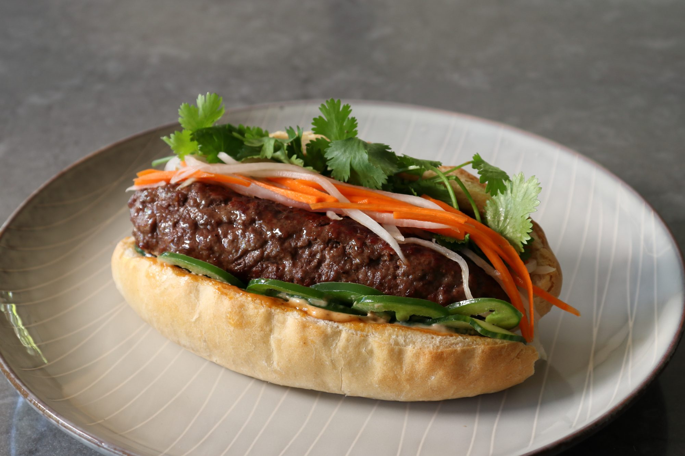

Banh Mi Burger

Description
That old saying, "If it's not broken, don't fix it," is sound advice in almost all areas of life with
one very notable exception… the kitchen. Many of our favorite dishes are versions of perfectly fine
recipes that we've tweaked and twisted into something new and exciting, and this Banh Mi Burger
is a great example.
Ingredients
- 1 pound ground beef chunk
- 1 teaspoon soy sauce
- 1 teaspoon fish sauce
- 1/2 teaspoon freshly ground black pepper
- 1/8 teaspoon five-spice powder
Steps
- Combine beef, fish sauce, soy sauce, freshly ground black pepper,
and 5-spice powder in a bowl, and mix until evenly combined. Cover
with plastic wrap and refrigerate until chilled.
- Mix mayonnaise, hoisin, and Sriracha together in a small bowl for sauce.
Keep chilled until needed.
- Preheat the oven to 400 degrees F (200 degrees C). Line a baking sheet with foil.
- Cut open rolls, remove about 1/2 of the inside crumb, and place on the
prepared baking sheet.
- Bake rolls in the preheated oven until toasted, 5 to 10 minutes.
- Meanwhile, using damp hands, shape beef mixture into two burger patties
sized to match your rolls or buns. Keep in the refrigerator until needed.
- Combine carrots and daikon radish in a bowl. Add rice vinegar and toss to coat.
Refrigerate until needed.
- Preheat a charcoal grill to high heat.
- Cook burgers over the hot coals until desired doneness is reached and they spring back
to the touch, turning as needed, about 4 minutes per side for medium-rare. An instant-read
thermometer inserted into the centers should read at least 145 degrees F (63 degrees C).
- Slather toasted buns with mayo mixture. Place cucumbers and jalapeno slices on bottom of rolls,
and top with cooked burgers. Top with carrot-radish mixture and cilantro.